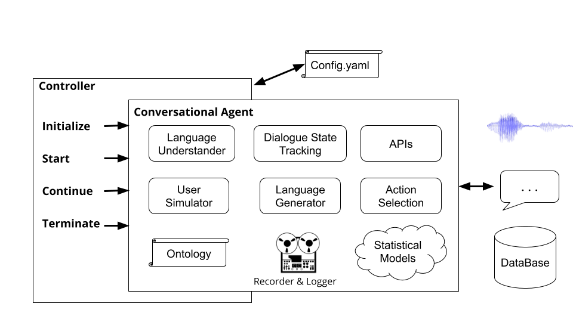

Getting Started
Installation¶
First make sure you have python version 3.6 or higher installed on your machine. Next you need to clone the Plato repository:
git clone git@github.com:uber-research/plato-research-dialogue-system.git
Next you need to install some pre-requisites:
-
For MacOS:
brew install portaudiobrew install gmppip install pyaudio
-
For Ubuntu/Debian:
sudo apt-get install python3-pyaudio -
For Windows: Nothing is needed to be pre-installed
Next step is installing Plato. To install Plato you should directly install it from source code.
Installing Plato from source code (Recommended)¶
Installing Plato from source code allows installation in editable mode which means that if you make changes to the source code, it will directly effect execution.
-
Navigate to the directory of Plato (where you cloned the plato repository in the previous step).
-
We recommend to create a new python environment. To set up the new python environment:
2.1 install virtualenv
sudo pip install virtualenv
2.2 create a new python environment:
python3 -m venv </path/to/new/virtual/environment>
2.3 activate the new python environment:
source </path/to/new/virtual/environment/bin>/bin/activate
-
Install Plato:
pip install -e .
To support speech it is necessary to install PyAudio, which has a number of dependencies that might not exist on a developer's machine. If the steps above are unsuccessful, this post on a PyAudio installation error includes instructions on how to get these dependencies and install PyAudio.
Common Issues During Installation¶
CommonIssues.md file contains common issues and their resolution that a user
might encounter while installation.
Running Plato¶
To run Plato after installation, you can simply run the plato command in the terminal.
The plato command receives 4 sub-commands:
run
gui
domain
parse
Each of these sub-commands receives a value for the --config argument that points to
a configuration file. We will describe these configuration files in detail later in the
document but remember that plato run --config and plato gui --config receive
an application configuration file
(examples could be found here: example/config/application/),
plato domain --config receives a domain configuration (examples could be found here:
example/config/domain/), and plato parse --config receives a parser configuration
file (examples could be found here: example/config/parser/).
For the value that is passed to --config Plato first checks to see if the value
is the address of a file on the machine. If it is, then Plato tries to parse that file.
If it is not, Plato checks to see if the value is a name of a file within the
example/config/<application, domain, or parser> directory.
For some quick examples, try the following configuration files for the Cambridge Restaurants domain:
plato run --config CamRest_user_simulator.yaml
plato run --config CamRest_text.yaml
plato run --config CamRest_speech.yaml
Building a Conversational Agent with Plato¶
An application, i.e. conversational system, in Plato contains three major parts:
- Domain
- Controller
- Agent
These parts are declared in an application configuration file. Examples of
such configuration files could be found at example/config/application/
In the rest of this section we describe each of these parts in details.
Domain¶
For implementing a task-oriented dialog system in Plato the user needs to specify two components that constitute the domain of the dialog system: Ontology Database
Plato provides a command for automating this process of building the ontology and database.
Let's say for example that you want to build a conversational agent for a
flower shop, and you have the following items in a .csv (this file could be found at
example/data/flowershop.csv):
id,type,color,price,occasion 1,rose,red,cheap,any 2,rose,white,cheap,anniversary 3,rose,yellow,cheap,celebration 4,lilly,white,moderate,any 5,orchid,pink,expensive,any 6,dahlia,blue,expensive,any
To automatically generate a .db SQL file
and a .json Ontology file you need to create a domain configuration file within which
you should specify the path to the csv file, output paths, as well as informable,
requestable, and system-requestable slots:
(e.g. example/config/domain/create_flowershop_domain.yaml):
GENERAL: csv_file_name: plato/example/data/flowershop.csv db_table_name: flowershop db_file_path: plato/example/domains/flowershop-dbase.db ontology_file_path: plato/example/domains/flowershop-rules.json ONTOLOGY: # Optional informable_slots: [type, price, occasion] requestable_slots: [price, color] System_requestable_slots: [type, price, occasion]
and run the command:
plato domain --config create_flowershop_domain.yaml
If all went well, you should have a flowershop.json and a
flowershop.db in the example/domains/ directory.
If you receive this error:
sqlite3.IntegrityError: UNIQUE constraint failed: flowershop.id
it means that the .db file has already been created.
You can now simply run Plato's dummy components as a sanity check and talk to your flower shop agent:
plato run --config flowershop_text.yaml
Controller¶
Controllers are objects that orchestrate the conversation between the agents. The Controller will instantiate the agents, initialize them for each dialogue, pass input and output appropriately, and keep track of statistics.

Running the command plato run runs Plato's basic controller
(plato/controller/basic_controller.py). This command receives a value for the --config
argument which points to a Plato application configuration file.
To run a Plato conversational agent, the user must run the following command with the appropriate configuration file:
plato run --config <FULL PATH TO CONFIG YAML FILE>
Please refer to example/config/application/ for example configuration files which contain
settings on the environment and the agent(s) to be created as well as their components.
The examples in example/config/application/ could be run directly using just the name of
the example YAML file:
plato run --config <NAME OF A FILE FROM example/config/application/>
Alternatively a user could write their own config file and run Plato by passing the
full path to their config file to --config:
plato run --config <FULL PATH TO CONFIG YAML FILE>
For the value that is passed to --config plato first checks to see if the value
is the address of a file on the machine. If it is, the Plato tries to parse that file.
If it is not, Plato checks to see if the value is a name of a file within the
example/config/application directory.
Agent¶
Each conversational AI application in Plato could have one or more agents. Each agent has a role (system, user, ...) and a set of standard dialog system components (Figure 1), namely NLU, dialogue manager, dialogue state tracker, policy, NLG, and user simulator.
An agent could have one explicit module for each one of these components.
Alternatively, some of these components could be combined into one or more modules
(e.g. joint / end-to-end agents) that can run sequentially or in parallel (Figure 4).
Plato's components are defined in plato.agent.component and all inherit from
plato.agent.component.conversational_module
 Figure 5. Components of Plato agents
Figure 5. Components of Plato agents
Note that any new implementations or custom modules should inherit from
plato.agent.component.conversational_module.
Each one of these modules could be either rule-based or trained. In the following subsections we will describe how to build rule-based and trained modules for agents.
Rule-based modules¶
Plato provides rule-based versions of all components of a Slot-Filling conversational agent (slot_filling_nlu, slot_filling_dst, slot_filling_policy, slot_filling_nlg, and the default version of agenda_based_us). These can be used for quick prototyping, baselines, or sanity checks. Specifically, all of these components follow rules or patterns conditioned on the given ontology and sometimes on the given database and should be treated as the most basic version of what each component should do.
Trained modules¶
Plato supports training of agents’ components modules in an online
(during the interaction) or offline (from data) manner, using any deep learning
framework. Virtually any model can be loaded into Plato as long as Plato’s
interface Input/Output is respected. For example, if a model is a custom NLU
module it simply needs to inherit from Plato's NLU abstract class
(plato.agent.component.nlu) and implement the necessary abstract methods.
Plato internal experience¶
To facilitate online learning, debugging, and evaluation, Plato keeps track of
its internal experience in a structure called the Dialogue Episode Recorder,
(plato.utilities.dialogue_episode_recorder)
which contains information about previous dialogue states, actions taken,
current dialogue states, utterances received and utterances produced, rewards
received, and a few other structs including a custom field that can be used to
track anything else that cannot be contained by the aforementioned categories.
At the end of a dialogue or at specified intervals, each conversational agent will call the train() function of each of its internal components, passing the dialogue experience as training data. Each component then picks the parts it needs for training.
To use learning algorithms that are implemented inside Plato, any external data, such as DSTC2 data, should be parsed into this Plato experience so that they may be loaded and used by the corresponding component under training.
Alternatively, users may parse the data and train their models outside of Plato and simply load the trained model when they want to use it for a Plato agent.
Parsing data with Plato¶
Training online is as easy as flipping the 'train' flags to 'True' in the configuration for each component users wish to train.
To train from data, users simply need to load the experience they parsed from their dataset. Plato provides example parsers for DSTC2 and MetaLWOZ datasets. As an example of how to use these parsers for offline training in Plato, we will use the DSTC2 dataset, which can be obtained from the 2nd Dialogue State Tracking Challenge website:
http://camdial.org/~mh521/dstc/downloads/dstc2_traindev.tar.gz
Once the download is complete, you need to unzip the file. A config file for
parsing this dataset is provided at example/config/parser/Parse_DSTC2.yaml.
You can parse the data that you downloaded by first editing
the value of data_path in example/config/parser/Parse_DSTC2.yaml to
point to the path to where you downloaded and unzipped the DSTC2 data. Next
you can run the parse script as follows:
plato parse --config Parse_DSTC2.yaml
Alternatively you could write your own config file and pass the absolute address to that file to the command:
plato parse --config <absolute pass to parse config file>
Running this command will run the parsing script for DSTC2
(which lives under plato/utilities/parser/parse_dstc2.py) and
will create the training data for dialog state tracker,
NLU, and NLG for both user and system under the data directory at the root
directory of this repository. Now this parsed data could be used to train
models for different components of Plato.
Training Components of Conversational Agents¶
There are multiple ways to train each component of a Plato agent: online (as the agent interacts with other agents, simulators, or users) or offline. Moreover, you can use algorithms implemented in Plato or you can use external frameworks such as TensorFlow, PyTorch, Keras, Ludwig, etc.
Ludwig is an open source deep
learning framework that allows you to train models without writing any code.
You only need to parse your data into .csv files, create a ludwig config
(in YAML), that describes the architecture you want, which features to use from
the .csv and other parameters and then simply run a command in a terminal.
Ludwig also provides an API, that Plato is compatible with. This allows Plato to integrate with Ludwig models, i.e. load or save the models, train and query them.
Train NLU¶
In the previous section, the DSTC2 parser of Plato generated
some .csv files that can be used to train NLU and NLG. There is one NLU
.csv file for the system (data/DSTC2_NLU_sys.csv) and one for
the user (data/DSTC2_NLU_usr.csv). These look like this:
| transcript | intent | iob |
|---|---|---|
| expensive restaurant that serves vegetarian food | inform | B-inform-pricerange O O O B-inform-food O |
| vegetarian food | inform | B-inform-food O |
| asian oriental type of food | inform | B-inform-food I-inform-food O O O |
| expensive restaurant asian food | inform | B-inform-pricerange O O |
For training a NLU model you need to write a configuration file that looks like this:
input_features:
-
name: transcript
type: sequence
reduce_output: null
encoder: parallel_cnn
output_features:
-
name: intent
type: set
reduce_output: null
-
name: iob
type: sequence
decoder: tagger
dependencies: [intent]
reduce_output: null
training:
epochs: 100
early_stop: 50
learning_rate: 0.0025
dropout: 0.5
batch_size: 128
An example of this config file exists in
example/config/ludwig/ludwig_nlu_train.yaml. The training job could be started
by running:
ludwig experiment \
--model_definition_file example/config/ludwig/ludwig_nlu_train.yaml \
--data_csv data/DSTC2_NLU_sys.csv \
--output_directory models/camrest_nlu/sys/
The next step is to load the model in an application config. In
example/config/application/CamRest_model_nlu.yaml we provide an
application config that has a model based NLU and the other components are
non-ML-based. By updating the path to the mode (model_path) to the value
that you provided to the --output_directory argument when you ran ludwig,
you can specify the NLU model that the agent needs to use for NLU:
...
MODULE_0:
package: applications.cambridge_restaurants.camrest_nlu
class: CamRestNLU
arguments:
model_path: <PATH_TO_YOUR_MODEL>/model
...
and test that the model works:
plato run --config CamRest_model_nlu.yaml
Train DST¶
The DSTC2 Data Parser generated two .csv files we can use for DST:
DST_sys.csv and DST_usr.csv which look like this:
| dst_prev_food | dst_prev_area | dst_prev_pricerange | dst_intent | dst_slot | dst_value | dst_food | dst_area | dst_pricerange | dst_req_slot |
|---|---|---|---|---|---|---|---|---|---|
| none | none | none | inform | food | vegetarian | vegetarian | none | expensive | none |
| vegetarian | none | expensive | inform | food | vegetarian | vegetarian | none | expensive | none |
| vegetarian | none | expensive | inform | food | asian oriental | asian oriental | none | expensive | none |
| asian oriental | none | expensive | inform | food | asian oriental | asian oriental | none | expensive | none |
| asian oriental | none | expensive | request | phone | none | asian oriental | none | expensive | phone |
| asian oriental | none | expensive | request | area | none | asian oriental | none | expensive | area |
| asian oriental | none | expensive | thankyou | none | none | asian oriental | none | expensive | none |
Essentially, the parser keeps track of the previous dialogue state, the input
from NLU, and the resulting dialogue state. We can then feed this into Ludwig
to train a Dialogue State Tracker. Here's the ludwig config which can also be
found at example/config/ludwig/ludwig_dst_train.yaml:
input_features:
-
name: dst_prev_food
type: category
-
name: dst_prev_area
type: category
-
name: dst_prev_pricerange
type: category
-
name: dst_intent
type: category
-
name: dst_slot
type: category
-
name: dst_value
type: category
output_features:
-
name: dst_food
type: category
-
name: dst_area
type: category
-
name: dst_pricerange
type: category
-
name: dst_req_slot
type: category
training:
epochs: 100
We now need to train our model with ludwig:
ludwig experiment \
--model_definition_file example/config/ludwig/ludwig_dst_train.yaml \
--data_csv data/DST_sys.csv \
--output_directory models/camrest_dst/sys/
and run a Plato agent with the model-based DST:
plato run --config CamRest_model_dst.yaml
You can of course experiment with other architectures and training parameters.
Train Dialogue Policy¶
So far we have seen how to train components of Plato agents using external frameworks (i.e. Ludwig). In this section, we will see how to use Plato's internal algorithms to train a dialogue policy offline, using supervised learning, and online, using reinforcement learning.
Supervised Dialogue Policy¶
Apart from the .csv files, the DSTC2 parser used Plato's dialogue episode
recorder to also save the parsed dialogues in Plato experience logs here:
logs/DSTC2_system and logs/DSTC2_user. These logs contain information about
each dialogue, for example current dialogue state, action taken, next dialogue
state, reward observed, input utterance, success, etc. These logs can be directly
loaded into a conversational agent and can be used to fill the experience pool.
All you need to do then is write a configuration file that loads these logs
(example/config/CamRest_model_supervised_policy_train.yaml):
GENERAL:
...
experience_logs:
save: False
load: True
path: logs/DSTC2_system
...
DIALOGUE:
# Since this configuration file trains a supervised policy from data loaded
# from the logs, we only really need one dialogue just to trigger the train.
num_dialogues: 1
initiative: system
domain: CamRest
AGENT_0:
role: system
max_turns: 15
train_interval: 1
train_epochs: 100
save_interval: 1
...
DM:
package: plato.agent.component.dialogue_manager.dialogue_manager_generic
class: DialogueManagerGeneric
arguments:
DST:
package: plato.agent.component.dialogue_state_tracker.slot_filling_dst
class: SlotFillingDST
policy:
package: plato.agent.component.dialogue_policy.deep_learning.supervised_policy
class: SupervisedPolicy
arguments:
train: True
learning_rate: 0.9
exploration_rate: 0.995
discount_factor: 0.95
learning_decay_rate: 0.95
exploration_decay_rate: 0.995
policy_path: models/camrest_policy/sys/sys_supervised_data
...
Note that we only run this agent for one dialogue but train for 100 epochs, using the experience that is loaded from the logs:
plato run --config CamRest_model_supervised_policy_train.yaml
After training is complete, we can test our supervised policy:
plato run --config CamRest_model_supervised_policy_test.yaml
Reinforce Dialogue Policy¶
In the previous section, we saw how to train a Supervised dialogue policy. We can now see how we can train a Reinforcement Learning policy, using the Reinforce algorithm. To do this, we define the relevant class in the configuration file:
...
AGENT_0:
role: system
max_turns: 15
train_interval: 500
train_epochs: 3
train_minibatch: 200
save_interval: 5000
...
DM:
package: plato.agent.component.dialogue_manager.dialogue_manager_generic
class: DialogueManagerGeneric
arguments:
DST:
package: plato.agent.component.dialogue_state_tracker.slot_filling_dst
class: SlotFillingDST
policy:
package: plato.agent.component.dialogue_policy.deep_learning.reinforce_policy
class: ReinforcePolicy
arguments:
train: True
learning_rate: 0.9
exploration_rate: 0.995
discount_factor: 0.95
learning_decay_rate: 0.95
exploration_decay_rate: 0.995
policy_path: models/camrest_policy/sys/sys_reinforce
...
Note the learning parameters under AGENT_0 and the algorithmic-specific
parameters under the policy's arguments. We then call plato with this configuration:
plato run --config CamRest_model_reinforce_policy_train.yaml
and test the trained policy model:
plato run --config CamRest_model_reinforce_policy_test.yaml
Note that other components can also be trained online, either using Ludwig's API or by implementing the learning algorithms in Plato.
Note also that log files can be loaded and used as experience pool for any component and learning algorithm. However, you may need to implement your own learning algorithms for some Plato components.
Train NLG¶
To train an NLG module you need to write a
configuration file that looks like this (e.g.
example/config/application/CamRest_model_nlg.yaml):
---
input_features:
-
name: nlg_input
type: sequence
encoder: rnn
cell_type: lstm
output_features:
-
name: nlg_output
type: sequence
decoder: generator
cell_type: lstm
training:
epochs: 20
learning_rate: 0.001
dropout: 0.2
and train your model:
ludwig experiment \
--model_definition_file example/config/ludwig/ludwig_nlg_train.yaml \
--data_csv data/DSTC2_NLG_sys.csv \
--output_directory models/camrest_nlg/sys/
The next step is to load the model in Plato. Go to the
CamRest_model_nlg.yaml configuration file and update the path if
necessary:
...
NLG:
package: applications.cambridge_restaurants.camrest_nlg
class: CamRestNLG
arguments:
model_path: models/camrest_nlg/sys/experiment_run/model
...
and test that the model works:
plato run --config CamRest_model_nlg.yaml
Remember that Ludwig will create a new experiment_run_i directory each time it is called, so please make sure you keep the correct path in Plato's config up to date.
Note that Ludwig also offers a method to train your model online, so in practice you need to write very little code to build, train, and evaluate a new deep learning component in Plato.
Train an end-to-end conversational agent based on Seq2Seq¶
For this example, we will use the MetalWoz dataset that you can download from here.
Plato supports jointly trained models through Generic Agents. Here we will see the steps needed to create a simple seq2seq conversational agent from scratch. Using MetalWOZ as an example, we need to do the following:
1. Write a MetalWOZ data parser that reads the data and procudes CSV files¶
As we are only training a simple seq2seq model (text to text), we need our parser to extract user and system utterances. These will be saved in .csv files that will be used by Ludwig in step 4.
For a simple implementation of a MetalWOZ parser, see
utilities/parser/Parse_MetalWOZ.py
Please note that this parser will only parse one single file (one domain). You can easily modify it, however, to fit your needs. Here is a sample of the output produced by the parser for the pizza ordering domain:
| user | system |
|---|---|
| hi | Hello how may I help you? |
| I need placing an order for a pizza need help | Certainly, what would you like to add to your order? |
| I want a pizza with mushroom, pepperoni, and bacon toppings | Unfortunately, this location is out of the bacon topping you requested. Would there be a different topping you'd like to replace it with? |
| How about pineapple | That topping is available. I've added a pizza with mushroom, pepperoni, and pineapple to your order. What size would you like? |
| Medium | Alright, updated. Would you like to add more to your order? |
| That's all, thanks | Alright, your total is 14.99. Your pizza will be ready for pickup in approx. 20 mins. |
Note the first user utterance does not actually exist in the data. However, we need something to prompt the model to produce the system's greeting - we could have used an empty sentence, or any other greeting (or a combination of these).
2. Write a config for plato parse¶
You can then run plato parse as follows:
plato parse --config Parse_MetalWOZ.yaml
3. Train an end-to-end model¶
To get started we can train a very simple model using Ludwig (feel free to use your favourite deep learning framework here):
input_features:
-
name: user
type: text
level: word
encoder: rnn
cell_type: lstm
reduce_output: null
output_features:
-
name: system
type: text
level: word
decoder: generator
cell_type: lstm
attention: bahdanau
training:
epochs: 100
You can modify this config to reflect the architecture of your choice and train using Ludwig:
ludwig train \
--data_csv data/metalwoz.csv \
--model_definition_file example/config/ludwig/metalWOZ_seq2seq_ludwig.yaml \
--output_directory "models/joint_models/"
4. Write a class inheriting from Conversational Module that loads and queries the model¶
This class simply needs to handle loading of the model, querying it
appropriately and formatting its output appropriately. In our case, we need to
wrap the input text into a pandas dataframe, grab the predicted tokens from
the output and join them in a string that will be returned. See the class here:
plato.agent.component.joint_model.metal_woz_seq2seq.py
5. Write a Plato generic yaml config and run your agent!¶
See example/config/application/metalwoz_generic.yaml for an example generic
configuration file that interacts with the seq2seq agent over text. You can try
it out as follows:
plato run --config metalwoz_text.yaml
Remember to update the path to your trained model if necessary! The default path assumes you run the ludwig train command from Plato's root directory.
Training Multiple Conversational Agents Simultaneously¶
One of Plato's main features allows two agents to interact with each other. Each agent can have a different role (for instance, system and user), different objectives, and receive different reward signals. If the agents are cooperating, some of these can be shared (e.g., what constitutes a successful dialogue).
To run multiple Plato agents on the Cambridge Restaurants domain, we run the following commands to train the agents’ dialogue policies and test them:
-
Training phase: 2 policies (1 for each agent) are trained. These policies are trained using the WoLF algorithm:
plato run --config MultiAgent_train.yaml -
Testing phase: uses the policy trained in the training phase to create dialogs between two agents:
plato run --config MultiAgent_test.yaml
While the basic controller currently allows two agent interaction, it is fairly straightforward to extend it to multiple agents (e.g. with a blackboard architecture, where each agent broadcasts its output to other agents). This can support scenarios such as smart homes, where every device is an agent, multi-user interactions with various roles, and more.
User Simulators¶
Plato provides implementations for two kinds of user simulators. One is the very well known Agenda-Based User Simulator, and the other is a simulator that attempts to mimic user behaviour observed in data. However, we encourage researchers to simply train two conversational agents with Plato (one being a 'system' and one being a 'user') instead of using simulated users, when possible.
Agenda-Based User Simulator¶
The Agenda-Based User Simulator was proposed by Schatzmann and is explained in detail in this paper. Conceptually, the simulator maintains an "agenda" of things to say, which is usually implemented as a stack. When the simulator receives input, it consults its policy (or its set of rules) to see what content to push into the agenda, as a response to the input. After some housekeeping (e.g. removing duplicates or content that is no longer valid), the simulator will pop one or more items off the agenda that will be used to formulate its response.
The Agenda-Based User Simulator also has an error simulation module, that can simulate speech recognition / language understanding errors. Based on some probabilities, it will distort the output dialogue acts of the simulator - the intent, slot, or value (different probability for each). Here is an example of the full list of parameters that this simulator receives:
patience: 5 # Stop after <patience> consecutive identical inputs received pop_distribution: [0.8, 0.15, 0.05] # pop 1 act with 0.8 probability, 2 acts with 0.15, etc. slot_confuse_prob: 0.05 # probability by which the error model will alter the output dact slot op_confuse_prob: 0.01 # probability by which the error model will alter the output dact operator value_confuse_prob: 0.01 # probability by which the error model will alter the output dact value nlu: slot_filling # type of NLU the simulator will use nlg: slot_filling # type of NLG the simulator will use
Dialogue Act to Language User Simulator¶
This simulator was designed to be a simple policy-based simulator, that can
operate at the dialogue act level or at the utterance level. To demonstrate
how it works, the DSTC2 parser created a policy file for this simulator:
user_policy_reactive.pkl (reactive because it reacts to system dialogue
acts instead of user simulator state). This is actually a simple dictionary of:
System Dial. Act 1 --> {'dacts': {User Dial. Act 1: probability}
{User Dial. Act 2: probability}
...
'responses': {User utterance 1: probability}
{User utterance 2: probability}
...
System Dial. Act 2 --> ...
The key represents the input dialogue act (e.g. coming from the system
conversational agent). The value of each key is a dictionary of two elements,
representing probability distributions over dialogue acts or utterance templates
that the simulator will sample from.
To see an example, you can run the following configuration:
plato run --config CamRest_dtl_simulator.yaml
Create a new module¶
There are two ways to create a new module depending on its function. If a module, for example, implements a new way of performing NLU or dialogue policy, then you should write a class that inherits from the corresponding abstract class.
If, however, a module does not fit one of the single agent basic components,
for example, it performs Named Entity Recognition or predicts dialogue acts
from text, then you must write a class that inherits from the
conversational_module directly. You can then load the module via a
generic agent by providing the appropriate package path, class name, and
arguments in the configuration.
...
MODULE_i:
package: my_package.my_module
Class: MyModule
arguments:
model_path: models/my_module/parameters/
...
...
Be careful! You are responsible for guaranteeing that the I/O of this module can be processed and consumed appropriately by modules before and after, as provided in your generic configuration file.
Plato also supports (logically) parallel execution of modules. To enable that you need to have the following structure in your config:
...
MODULE_i:
parallel_modules: 5
PARALLEL_MODULE_0:
package: my_package.my_module
Class: MyModule
arguments:
model_path: models/myModule/parameters/
...
PARALLEL_MODULE_1:
package: my_package.my_module
Class: MyModule
arguments:
model_path: models/my_module/parameters/
...
...
...
Be careful! Outputs from the modules executed in parallel will be packed
into a list. The next module (e.g. MODULE_i+1) will need to be able
to handle this kind of input. The provided Plato modules are not designed to
handle this, you will need to write a custom module to process input from
multiple sources.
Create new States, Actions, Learning Algorithms, and more¶
Plato is designed to be extensible, so feel free to create your own Dialogue States, Actions, Reward Functions, Algorithms, or any other component to suit your specific needs. You only need to inherit from the corresponding class to make sure your implementation is compatible with Plato.
Graphical User Interface¶
Plato uses PySimpleGUI to
handle graphical user interfaces. An example GUI for Plato is implemented at
platosgui_controller and you can try it out using the following command:
plato gui --config CamRest_GUI_speech.yaml
Upcoming Tutorials¶
- Using pre-trained models (BERT, GPT, etc.) in Plato
- Multi-domain Conversational Agents
- Multi-lingual Conversational Agents
Upcoming Features¶
- Principled logging and printing
- More dataset parsers
- More options for multi-agent controllers
- Bayesian Optimisation in Plato